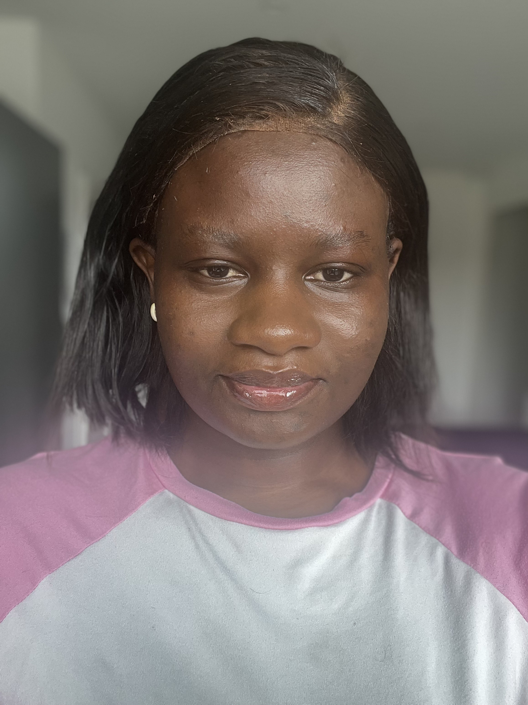

Passionnée par le développement de logiciels et le développement web, je m'efforce d'acquérir une maîtrise approfondie des technologies modernes telles que Next.js et Tailwind CSS
Mon objectif est de concevoir des solutions innovantes, performantes et intuitives pour répondre aux besoins des utilisateurs.
Télécharger mon CV
Pour quoi travailler avec moi:
Dynamique et Innovente
Expérience académique en React.js,HTML,CSS,Python,javascript,SQL,OCaml
Capacité d'adaptation
Mes diverses expériences professionnelles témoignent de ma capacité à apprendre rapidement et à m'adapter à différents environnements
Créativité et Conception
Passionnée par la conception d'interfaces innovantes et interactives, je m'attache à offrir des expériences utilisateur immersives et engageantes